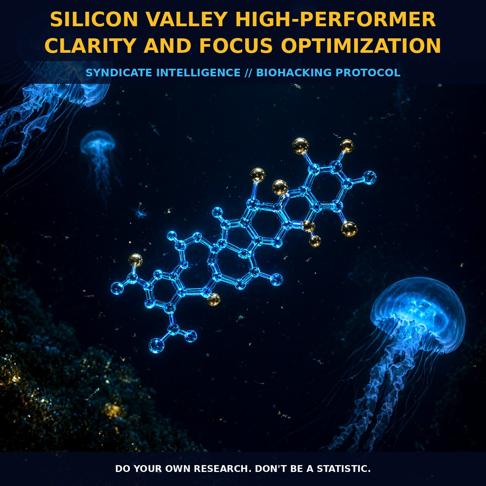

Metabolic Cost of Context Switching: Nootropic Stacks &

1. The Mechanics of Cognitive Fragmentation
The Silicon Valley high-performer does not merely suffer from information overload; they endure a continuous physiological stress response driven by fragmented attention. The law of concentration dictates that multitasking is metabolically inefficient, reducing productivity by up to forty percent because the brain constantly switches contexts rather than maintaining a singular focus state. This switching cost triggers sympathetic nervous system activation, physically observable through pupil dilation proportional to the cognitive demand.
When juggling multiple inputs—emails, calls, and screens—visual processing systems are forced to rapidly shift gaze, depleting the neural resources required for deep work. Transitioning from this fragmented state to a focused flow zone requires interrupting the cycle of high-frequency switching. Research indicates that while humans can sustain concentration on a single stimulus for ten to twenty-five minutes, this window expands significantly upon entering a flow state, where focus can persist for hours. By optimizing external factors like full-spectrum lighting and utilizing neurovisual training, professionals can reduce the physiological strain of sustained cognitive load.
2. Biological Leverage: Nootropics and Visuals
Optimizing brain function involves leveraging both chemical and environmental inputs to support the underlying neural machinery. Regular use of nootropics diminishes background noise, creating an environment where innovation operates without interference from external stressors. While specific receptor mechanisms are still being mapped, the aggregate effect of nootropic stacking modulates pathways responsible for alertness and cognitive endurance, allowing professionals to push the limits of mental efficiency.
Visual optimization acts as a parallel lever, directly influencing cognitive throughput through the optic nerve and visual cortex. Techniques such as peering—scrutinizing minute details of objects within four to six inches for brief intervals—adjust visual focus like a camera lens, reducing ocular strain. Combined with proper light optimization and multi-monitor setups that separate functional contexts, this reduces sensory clutter, allowing neural circuits responsible for visual-spatial processing to operate without bottlenecking.
3. Protocol Implementation
To maximize concentration windows, high-performers should schedule deep focus tasks during specific time blocks rather than attempting continuous all-day work. Planning task completion based on context is essential; reserving the computer for deep work and the tablet for communication reduces the cognitive load of switching between applications. Blocking distracting apps and scheduling telephone calls to specific times prevents the interruption loop, which occurs as frequently as once every three minutes in typical office environments.
Reading efficiency is further optimized by identifying the optimal recognition point, usually slightly to the left of the middle of each word. Utilizing spritz applications or similar technologies that highlight this point maintains a steady flow of information. Additionally, engaging in brain games such as crosswords or jigsaw puzzles supports hippocampal health, potentially reducing age-related volume loss. By combining targeted nootropic stacks with rigorous environmental controls and visual training, Silicon Valley professionals establish a robust protocol for sustained mental clarity.
Prostar Life Hack
The 4-6 Inch Peer: When feeling scattered, isolate a small detail on an object within four to six inches of your face. Hold this visual lock for thirty seconds. This simple act resets the autonomic focus mechanism, dampens sympathetic overdrive, and sharpens situational awareness faster than caffeine.
Prostar Life Hack
The 4-6 Inch Peer: When feeling scattered, isolate a small detail on an object within four to six inches of your face. Hold this visual lock for thirty seconds. This simple act resets the autonomic focus mechanism, dampens sympathetic overdrive, and sharpens situational awareness faster than caffeine.
[ AUTHOR: LEAD TECHNICAL RESEARCHER ]
[FRESH ON CHAIN: 5fc8f5cfb3d40f1d... ]